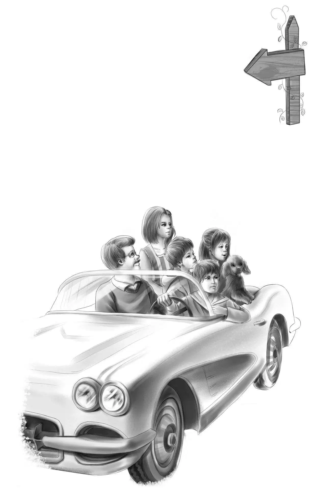

Light house for Sale

在简姑婆家度过的暑假就要结束了。经过漫长的岁月，简姑婆现在终于如愿以偿地嫁给了安迪·豆先生，让简姑婆高兴的是，没有人叫她豆太太，大家都管她叫安迪太太——安迪也很喜欢这个称呼。
奥登爷爷把四个孩子召集了起来：“简姑婆和安迪要去蜜月旅行了，我看如今咱们也该回家啦。”
“蜜月旅行会去哪儿？”班尼好奇地猜测道，“我猜他们一定打算环游世界，因为安迪跟简姑婆保证过，永远都不会让她感到无聊。”
亨利笑道：“这一点我相信，安迪永远都闲不住。”
维莉说：“杰西，你发现了么，简姑婆现在看起来又年轻又健康！”
“没错，”杰西赞同道，“自从安迪叔叔回来以后，她一直都很开心。爷爷，您说得对，咱们是该回家了。简姑婆要是不在农场，我们也不想待在这里了。”
于是大家开始着手收拾回去的行李。临行前，简姑婆还帮忙和杰西一起做了顿丰盛的野餐。
一一惜别之后，亨利发动了汽车。“出发喽！”班尼大声宣布道。
他们向着家的方向进发——至少大家的初衷是如此。
路上，亨利提议道：“咱们要不换条路线，改走沿海的公路回家吧？”
车行驶在沿海的路上，大家视野所及全是蔚蓝的海面。走了还不到一个小时，班尼就嚷嚷了起来：“我饿了！”
“你呀，总是饿得快！”爷爷说，“待会儿咱们到了康利镇的灯塔停一下，那儿有家小杂货店，大家可以去买点牛奶。我们带的三明治足够吃两顿的——有火腿和鸡肉的两种，简姑婆做的三明治顶好吃呐！”
“咱们还可以顺便去看看灯塔！”班尼提议，“说不定灯塔的看守会同意我们参观顶楼的小阳台呢！”
“也许吧，老弟！”亨利笑着说，“不过那个瞭望台可不叫小阳台。还有，要爬很久才能到达灯塔顶层呢！”
不一会儿，他们就看到了远方的灯塔。塔身是白色的，灯塔脚下有一座白色的小屋，中间有条小路相连。灯塔与小屋屹立在海里的岬角上，四周岩石密布。
“快看！”维莉大声说，“灯塔上有个牌子，上面写的是什么？”
“我看不清。”奥登先生说。
“我看见啦！”亨利说，“上面写的是‘待售’。”
“灯塔待售？”杰西万分惊讶，“我从不知道，原来灯塔也可以卖啊！我一直以为它们是属于政府的呢！”
“灯塔是属于海岸巡逻队的，”奥登先生解释道，“听说最近很多灯塔都在出售，因为现在人们都改用雷达为船只导航了。”
“哇噢，要是我们能住在灯塔里就太酷了，爷爷！”班尼兴奋地说，“看，灯塔的每层楼都有窗户，爷爷可以住在一楼，这样就不用爬楼了。姐姐们住二楼，亨利住三楼，我就住带小阳台的顶楼——哦，应该是瞭望台。就这么定了！”
爷爷情不自禁地笑了起来，问道：“你想买下这座灯塔吗？”
“当然喽！”班尼回答道。
“我也想，”杰西说，“爷爷，住在灯塔里一定非常有趣——咱们可以随时跳到海里去游泳。”
“还可以捡贝壳，观察水鸟。”维莉轻轻补充道。
“还有钓鱼。”亨利加了一句。
说话间，他们的车已经到了灯塔旁。亨利停下车，大家都注视着灯塔，却没有人说话——他们都在等着爷爷做决定。
终于，爷爷开口了：“走，孩子们，咱们去小杂货店里打听打听，说不定我们可以将灯塔用上一用。”
“万岁！”班尼欢呼道。
哥哥姐姐们也和班尼一样开心，他们彼此对视，欢喜地笑着。
“亨利，将车直接开到门口吧！”奥登先生说，“杂货店老板通常都是‘包打听’。”
果然，当爷爷问道：“你了解那座灯塔的情况吗？”老板笑着回答：“当然喽，我对灯塔了如指掌，它现在已经废弃不用了。”
“我看到它正在出售。”奥登先生说。
“哦，现在不卖了，”老板说，“我已经把灯塔买下来了，只是还没来得及取下‘待售’的标牌。不过，我很乐意把它租出去。”
“是吗？”奥登先生问，“我的孙儿们很想在这儿住上几个星期。”
“荣幸之至，灯塔里一应俱全。”
班尼笑了：“在灯塔里做家务，多好玩的事啊！”
“那座白色小屋也和它一起出租吗？”亨利问道。
“不是的，”店铺老板说，“本来它们应该是一起的，可是我还没来得及出手，就被一个叫库克的人买去了，他是专门炒房子的。库克准备把那小白屋装修一下再租出去，看，现在连小屋的窗户都是破的，只是用木板钉上了而已。他压根没料到会有人想租灯塔。”
“住在灯塔里需要用那间小屋吗？”杰西问。
“那倒不用，它只是作为夏季厨房罢了。冬天用灯塔里的厨房就可以了，里面的煤气炉和冰箱比小屋里的更好。灯塔每层楼都有张舒适无比的帆布床，吃的东西在我的店里都能买到。对了，我叫豪尔。”
“我知道，刚才已经看到你店名——‘豪尔杂货店’了。”奥登先生说。
亨利问：“我们能在海滩上烧烤吗？”
“当然可以，这附近没有易燃的树丛，只有沙滩、海水和岩石。而且我知道，你们一定会非常小心的。”
班尼说：“没错，烧烤完了后我们会用沙子将火熄灭的。”
“那很好！大家随意吧，要是想进灯塔去看看，这里有钥匙。”
“我想去！”班尼抢着说，“我要去顶层看看小阳台。”
“好的！”爷爷说，“你们先上车，我和豪尔先生谈一谈租金的问题。”
亨利接过钥匙，径直向灯塔驶去，可由于沿路泥沙太多，没法将车停在灯塔的正门口。
亨利一打开门，两个女孩便直奔厨房而去。
“棒极了！”杰西说，“这里有个漂亮的小煤气炉。”
维莉说：“还有各式各样的盘子，正是我们喜欢的样式。”
灯塔里的台阶盘旋而上，班尼一圈一圈地往上爬着。
他边爬边叫：“好小的房间啊，每间房只放得下一张帆布床。”他停了下来，逐一看了看窗外，然后大声宣布：“这是一楼，爷爷的卧室。”
接着他又向上爬了一层：“这是二楼，杰西和维莉的卧室；三楼是亨利的；这一层，是我的！”这时，大家几乎已经听不清他在说什么了。
之后，班尼的声音便没再传来——他已经爬到顶层去观赏大海了。
爷爷说：“好在每层都有一扇窗户，这儿的夏天肯定很热。”
“有海风吹过来，”维莉说，“应该不会太热。”
这时，床已经铺好，大家也都累了。
“咱们去睡觉吧！”奥登先生说。
“八点就睡觉么？”班尼叫了起来，“也好，我想我的小床应该非常舒服。”
大家很快就进入了梦乡，没人听到小镇的钟声，但它还是准点地在敲响——9点，10点，11点。当钟敲响12下的时候，望望坐了起来，开始“汪汪汪”地叫个不停。